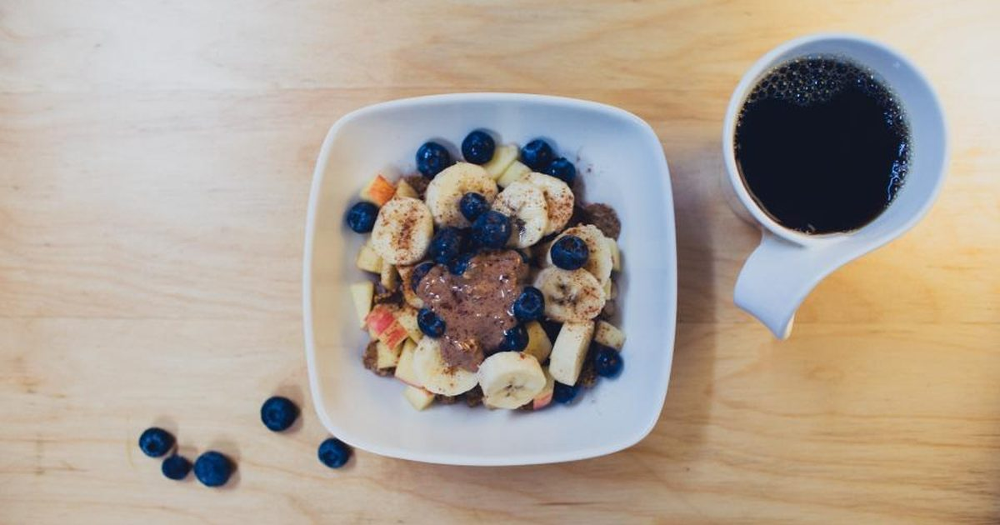

Habits & Recovery
Building a Home Workout Routine Around Shift Work
Every training plan assumes a stable week. Shift work removes that assumption, and the answer is not a better schedule — it is a plan that does not need one.

Standard training advice assumes Monday, Wednesday, Friday. For anyone working rotating shifts, nights, or an on-call pattern, that structure is not merely inconvenient — it is inapplicable, and trying to force it produces a routine that fails in the first difficult rotation.
Why normal plans fail
Fixed days do not exist. A Monday/Wednesday/Friday plan requires those days to be similar week to week, which they are not.
Fixed times do not exist either. An evening slot is meaningless when your evening is sometimes a night shift.
Recovery is genuinely compromised. This is the part usually skipped. Shift work, particularly night work, is associated with disrupted sleep, and sleep restriction measurably impairs training performance and recovery.1 A plan that assumes normal recovery will overreach.
Habit cues are unstable. Habit formation depends on repetition in a consistent context,2 and a rotating pattern removes the consistency that cues depend on.
The principle: count sessions, not days
The single change that makes this work.
Stop planning by day of week and plan by sessions per rotation cycle. If your pattern is four on, four off, plan six sessions per eight-day cycle rather than three per week. If the pattern is irregular, plan a number of sessions per fortnight and place them as the fortnight allows.
This sounds like a small semantic change and it is not. It converts a plan you fail against into one you can succeed at, because it is measured against something that actually recurs in your life.
It also matches the physiology reasonably well. Weekly volume drives adaptation,3 and the body responds to accumulated training rather than to which day of the week it arrived on. Six sessions across eight days is six sessions.
The structure
Full-body sessions, always. Not a split. With an irregular pattern you cannot guarantee when the next session will be, so every session must train everything. A split risks leaving a region untrained for a fortnight — the reasoning is in full body vs split routines.
Two session lengths, both defined in advance. A full thirty-minute version for good days and a ten-minute version for the end of a night shift. Deciding these in advance removes the judgement call at the worst moment.
Anchor to shift events rather than clock times. "After I get home from a day shift, before I sit down" is a cue that survives rotation. "At half past six" is not.
Target the achievable number. Take what you think you can manage per cycle and subtract one. Hitting the target builds the sense that the plan works; missing it repeatedly is what ends routines — see beating the six-week drop-off.
The sessions themselves can be the three-day split run as a rotation rather than a week, with the ten-minute version being the first three exercises for two sets each.
Training around night shifts
Some practical patterns, offered as a starting point rather than a prescription, since tolerance varies enormously.
Before a night shift, after waking: often the best slot. You are relatively rested and it is before the shift has depleted you. Keep intensity moderate.
After a night shift: generally the worst slot for anything hard. You are at your lowest and about to sleep, and training hard here tends to make sleep worse rather than better for many people. If you train at all, keep it light or make it the ten-minute version.
On days off: the obvious place for the harder sessions, and worth protecting for that rather than filling with everything else.
Mid-shift, on a break: underrated if your workplace allows it. A ten-minute standing session in a quiet corner needs no floor and no change of clothes — see standing workouts and the office workout.
Plan six sessions per eight-day rotation, not three per week. It is the same training and a target you can actually hit.
The sleep problem
The honest difficulty, and it deserves stating rather than working around.
Shift work, particularly rotating and night work, is associated with disrupted sleep and circadian misalignment. Sleep has documented effects on training performance and recovery,1 which means your recovery capacity is genuinely reduced — not as an excuse but as a planning input.
The practical response is to train appropriately for the recovery available rather than pretending it is intact:
- Stop sets further from failure. Three or four repetitions in reserve rather than one.
- Lower total volume. Two or three sets rather than four.
- Avoid technical skill work when underslept, since coordination degrades and the practice is poor quality.
- Treat maintenance as a legitimate goal during difficult rotations. Two sessions still meets the adult recommendation for muscle-strengthening activity.4
The general decision rule for training on low sleep is in working out when you're exhausted, and the wider picture in sleep and strength.
Shift work is associated with a range of health effects beyond tiredness, and persistent problems with sleep, mood, digestion or cardiovascular symptoms are worth discussing with your GP rather than managing alone. Occupational health services, where available, can also advise on rotation patterns and sleep strategies specific to your role.
Rotating shifts specifically
Rotating patterns are harder than fixed nights, because you never fully adapt to either.
Two things that help. Train on the same point in the rotation rather than the same day of the week — the second day of every run of days, for instance. That gives you the consistent context habit formation needs even without a consistent calendar.
And accept variable session quality. Some sessions in a rotation will be good and some will be poor, and that is a property of the pattern rather than of your effort. Judging each session against your best one is a route to abandoning the routine; judging the cycle against the previous cycle is more useful — see tracking progress without a gym or scale.
Realistic expectations
Progress will be slower than for someone with a stable schedule and adequate sleep. That is a real consequence of a real constraint, and pretending otherwise sets you up to be disappointed by a plan that is working as well as it can.
What is achievable: meeting adult activity guidance comfortably, getting meaningfully stronger, and maintaining that indefinitely. What is harder: rapid progress, technical skill work, and high-volume training blocks.
Given that shift work already carries health considerations, the case for training around it is if anything stronger than for someone on a regular schedule — it is simply a case for training sustainably rather than intensively.
Where to go next
For the sessions to run, use the three-day split. For quiet training at unusual hours, see quiet home workouts.
Frequently asked questions
How do I work out with a rotating shift pattern?
Plan sessions per rotation cycle rather than per week — six sessions per eight-day cycle rather than three per week. Use full-body sessions only, define both a full and a ten-minute version in advance, and anchor training to shift events rather than clock times.
Should I train before or after a night shift?
Before, after waking, is usually the better slot — you are relatively rested and not yet depleted. After a night shift is generally the worst time for anything hard, and training intensely then tends to make sleep worse for many people.
Does shift work affect training results?
Yes. Shift work is associated with disrupted sleep, and sleep restriction measurably impairs training performance and recovery. Progress will be slower than for someone with a stable schedule, which is a real consequence of a real constraint.
How should I adjust training when sleep is disrupted?
Stop sets three or four repetitions short of failure rather than one, reduce total volume, avoid technical skill work, and treat maintenance as a legitimate goal during difficult rotations. Two sessions a week still meets the adult strengthening recommendation.
Why do normal workout plans not work for shift workers?
Because they assume fixed days and fixed times, neither of which exist on a rotating pattern, and because they assume normal recovery. They also depend on habit cues that require a consistent context, which rotation removes.
Can shift workers still build muscle?
Yes, more slowly. Weekly volume drives adaptation and the body responds to accumulated training rather than which day it happened on. Rapid progress and high-volume blocks are harder; getting meaningfully stronger and maintaining it is entirely achievable.
Sources and further reading
- Bonnar D, Bartel K, Kakoschke N, Lang C. “Sleep Interventions Designed to Improve Athletic Performance and Recovery: A Systematic Review of Current Approaches.” Sports Medicine, 2018;48(3):683–703. PubMed.
- Lally P, van Jaarsveld CHM, Potts HWW, Wardle J. “How are habits formed: Modelling habit formation in the real world.” European Journal of Social Psychology, 2010;40(6):998–1009. doi:10.1002/ejsp.674.
- Schoenfeld BJ, Ogborn D, Krieger JW. “Dose-response relationship between weekly resistance training volume and increases in muscle mass: A systematic review and meta-analysis.” Journal of Sports Sciences, 2017;35(11):1073–1082. PubMed.
- World Health Organization. WHO Guidelines on Physical Activity and Sedentary Behaviour. 2020.
Comments
Comments are not enabled yet. Add a hosted comment embed (Disqus, Commento, Giscus) inside this container when you are ready.